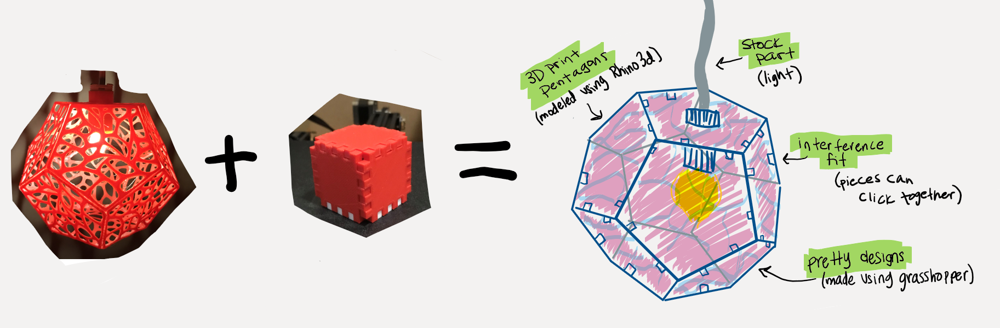

For this assignment I will design a lamp using Grasshopper. In assignment 6 (Lamps!) I designed a lamp made up of pentagons and used hot glue to put it together, but that took a lot of time. For this assignment, I will make it so each pentagon interlocks with another and clasps together using fingerjoints/boxjoints, tabs, or another joining method. I designed an interlocking pieces box for assignment 4, and this project will basically be a cross between that assignment and the lamp I made for assignment 6. When complete, the pentagons will make up a dodecahedran shape and will hang on a lightbulb. The lamp will be used create light in a fun and cool looking way. You will be able to take is places easily because it can deconstruct into smaller, storable pieces.
I will model the pentagons over thanksgiving break, and begin the printing and testing fits on Nov 28. I will complete building the lamp on Dec 2, and spend the remainder of my time documenting everything on my website. I will also be documenting as I work through this project.